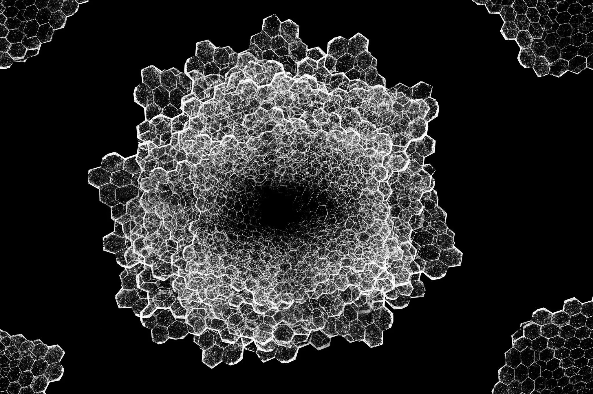
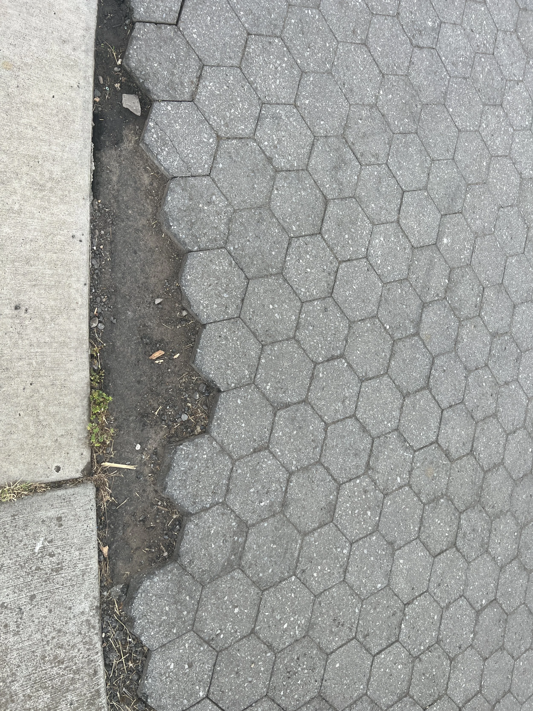

2023
This year I acquired my masters in computer science and started work as a software engineer at The Standard. As a result of being out of school I have more time to spend with family in addition to making art, so stay in tune! The updates will be spaced out quite a bit as usual, but I’m hoping to add more content as time passes.
The image below is a new abstract piece that was inspired by the degradation of a concrete walkway. The hexagonal tiles eroded and were removed over time leaving the edges jagged and incomplete. This is a far cry from the original photograph, but represents in itself the potential for creativity to be sparked by the mundane textures and patterns around us.
Given the proliferation of generative AI in recent years it’s becoming genuinely difficult over time to distinguish art created by a human vs that of a machine. Having studied both I understand that the processes are very similar in a way, but it has me thinking about what the pursuit of art means for people. In my prior work I pursued technical accuracy and made sure each image I put out was pixel perfect. While that hasn’t changed much I also see the attractiveness of adding disorder and imperfection to new work - a jab at our AI overlords almost. The image contains several repeating forms, but the shapes they belong to are asymmetrical and those on the edges aren’t mirrored. The texture and placement is made to feel organic and delicate in some ways reminiscent of a crystalline structures, fabric, honeycomb etc.

